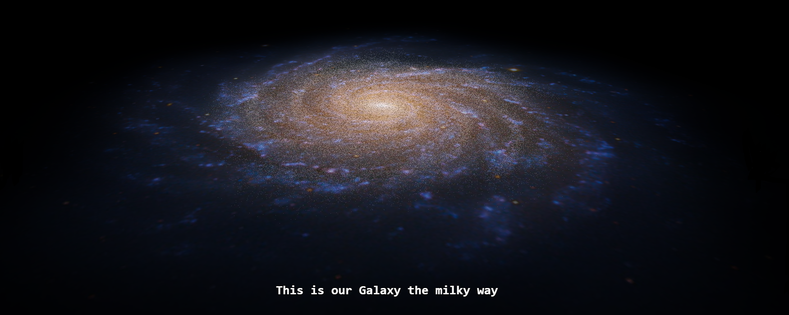
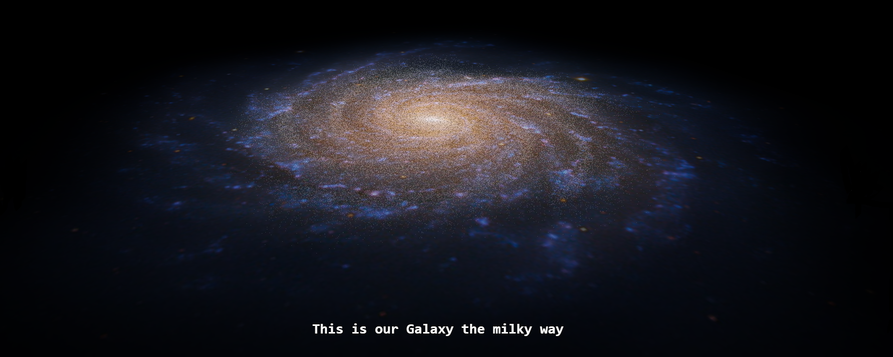

About Us
the creators of unExplore
unExplore was created in the halls of the Mathematics and Physical Sciences building in the University of Sussex The brain child of Colin Hayhurst and Rhys Poulton was first developed in the summer of 2016 using some of the cutting edge research the university is known for. The further developement of this educational tool will hopefully continue to be developed by both memebers of the University and the public for years to come using the developement platform Github.